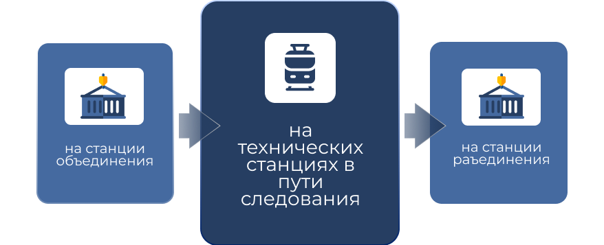

Работа с перевозочными документами на станции смены локомотивов (бригад) контейнерного поезда:

Смена локомотивной бригады без передачи пакета перевозочных документов ответственному работнику станции
Машинист
-
записывает в Журнал технического состояния локомотива формы ТУ-152 время сдачи, приема документов, номер и индекс поезда, количество пачек и фамилии сдавшего и принявшего документы
Принявший пакет перевозочных документов
-
убеждается по контрольному бланку формы ДУ-81с в принадлежности документов соответствующему поезду
-
проверяет целостность пакета и контрольного бланка формы ДУ-81с
-
докладывает дежурному по станции о получении перевозочных документов на объединенный контейнерный поезд